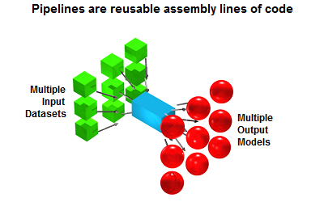

Welcome to the documentation for slicematrixIO-python¶
SliceMatrix-IO is a Platform as a Service (PaaS) where you can easily create and store machine learning models in our global cloud
Core Concepts¶
The 2 core concepts for SliceMatrix-IO are:
- The Analytical Pipeline
- The Model
AP’s can be thought of as assembly lines of code which can train machine learning models. AP’s are reusable, meaning you can use the same AP to train multiple machine learning models using different input data.
Model’s are where the real magic happens. After the Pipeline trains a Model, the Model live’s on SliceMatrix-IO’s machine learning infrastructure in the cloud. That means you can access your model after you create it in a distributed manner. You can also train models in parallel subject to your usage plan’s request / throttling limits.
Examples¶
>>> from slicematrixIO import SliceMatrix
>>> sm = SliceMatrix(api_key)
Create a minimum spanning tree model
>>> mst = sm.MinimumSpanningTree(dataset = prices)
>>> mst.neighbors("AAPL")
Train an isomap model
>>> iso = sm.Isomap(dataset = image_data)
>>> iso.embedding()
Use a Kalman filter for online hedge ratio estimation
>>> kf = sm.KalmanOLS(dataset = pairs_data)
Get the hedge ratio and update to new data
>>> kf.update(X = 147.25, Y = 88.17)
Train a probabilistic neural network classifer:
>>> pnn = sm.PNNClassifier(dataset = bc_data)
>>> pnn.predict([...])
Installation¶
The easiest way to install the package is with pip:
> pip install slicematrixIO
To get an API key, go here
Package Structure¶
The package is organized into many different submodules. They can be roughly grouped as follows:
- Low-Level / Shared
slicematrixIO.connect: Low level API clientslicematrixIO.core: Base classesslicematrixIO.utils: Utility objects
- High-Level
slicematrixIO.client: The High Level Client- The models...
slicematrixIO.bayesian_filters: Bayesian FiltersslicematrixIO.classifiers: ClassifiersslicematrixIO.distributions: Distribution Models / Anomaly DetectionslicematrixIO.graphs: Network Graph ModelsslicematrixIO.manifolds: Manifold Learning ModelsslicematrixIO.matrices: Distance / Similarity MatricesslicematrixIO.matrix_models: Matrix ModelsslicematrixIO.regressors: Regressors
- Visualization
slicematrixIO.client: Visualizing SliceMatrix-IO network graph models in the Jupyter Notebook
Examples / Use Cases¶
- Manifold Learning and Visualization on the Nasdaq 100
- KNN vs PNN Classification: Shuttle Dataset
- Dynamic Hedge Ratios with the Kalman Filter
- KNN vs PNN Classification: Breast Cancer Image Dataset
- Minimum Spanning Trees in Python
- Detecting Stock Market Anomalies
- Integrating Bloomberg and SliceMatrix-IO
- Integrating D3, NodeJS, and SliceMatrix-IO to Visualize the S&P 500
- Simulating Correlated Random Walks for the S&P 500